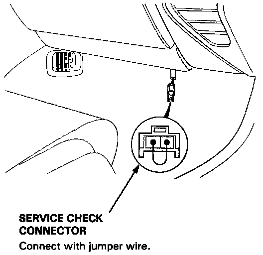
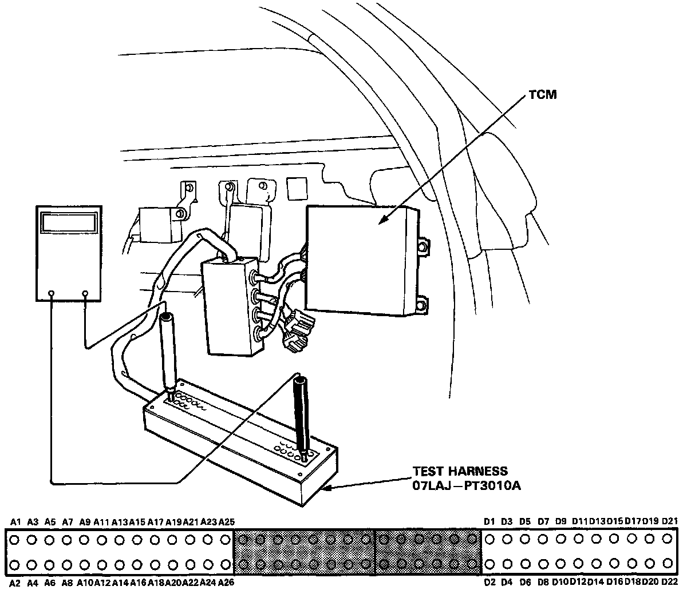

Initial Inspection and Diagnostic Overview
TROUBLESHOOTING PROCEDURES
When the Transmission Control Module (TCM) senses an abnormality in the input or output systems, the "D" indicator light in the gauge assembly will blink. However, when the Service Check Connector (located to the lower right of the glove compartment) is connected with a jumper wire, the "D" indicator light will blink the Diagnostic Trouble Code (DTC) when the ignition switch is turned on.

When the D indicator light has been reported on, connect the two terminals of the Service Check Connector together. Then turn on the ignition switch and observe the D indicator light.

Codes 1 through 9 are indicated by individual short blinks, Codes 10 through 16 are indicated by a series of long and short blinks. One long blink equals 10 short blinks. Add the long and short blinks together to determine the code. After determining the code, refer to the Diagnosis by Symptom.
Some PGM-FI problems will also make the D indicator light come on. After repairing the PGM-FI system, disconnect the CLOCK fuse (7.5 A) in the main relay box for more than 10 seconds to reset the TCM memory.
NOTE:
- PGM-FI system: the PGM-FI system on this model is a sequential multiport fuel injection system.
- Disconnecting the CLOCK fuse also cancels the radio preset stations and the clock setting. Make note of the radio presets before removing the fuse so you can reset them.
Inspection For A Particular DTC Which Requires The Use Of Test Harness (07LAJ-PT3010A)

Connect the wire harness to the Test Harness, and/or connect the Test Harness to the TCM according to the troubleshooting flowchart.
NOTE:
- Only the A and D terminals of the Test Harness are used for A/T troubleshooting.
- Unless otherwise noted, use only the Digital Multimeter, KS-AHM-32-003, for testing.
TCM RESET PROCEDURE
1. Turn the ignition switch off.
2. Remove the CLOCK fuse (7.5 A) from the main relay box for 10 seconds to reset the TCM.
NOTE: Disconnecting the CLOCK fuse also cancels the radio preset stations and the clock setting. Make note of the radio presets before removing the fuse so you can reset them.
FINAL PROCEDURE
NOTE: This procedure must be done after any troubleshooting.
1. Remove the jumper wire from the Service Check Connector.
2. Reset the TCM.
3. Set the radio preset stations and clock setting.